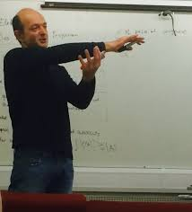

13 joint arXiv papers
- Areas of triangles and Beck's theorem in planes over finite fields
- Averages over hyperplanes, sum-product theory in vector spaces over finite fields and the Erdos-Falconer distance conjecture
- Distinct distances on a sphere
- Elementary methods for incidence problems in finite fields
- Endpoint bounds for the non-isotropic Falconer distance problem associated with lattice-like sets
- Erdos distance problem in vector spaces over finite fields
- Generalized incidence theorems, homogeneous forms, and sum-product estimates in finite fields
- Group actions and geometric combinatorics in ${\mathbb F}_q^d$
- On an application of Guth-Katz theorem
- On combinatorial compexity of convex sequences
- On discrete values of bilinear forms
- On distance measures for well-distributed sets
- Theory of dimension for large discrete sets and applications
16 joint MathSciNet papers
- A combinatorial approach to orthogonal exponentials (MR2017246)
- Areas of triangles and Beck's theorem in planes over finite fields (MR3367127)
- Averages over hyperplanes, sum-product theory in vector spaces over finite fields and the Erdős-Falconer distance conjecture (MR2775806)
- Combinatorial complexity of convex sequences (MR2183494)
- Distance measures for well-distributed sets (MR2322116)
- Elementary methods for incidence problems in finite fields (MR3600755)
- Erdős distance problem in vector spaces over finite fields (MR2336319)
- Freiman theorem, Fourier transform and additive structure of measures (MR2496000)
- Generalized incidence theorems, homogeneous forms and sum-product estimates in finite fields (MR2552610)
- Group actions and geometric combinatorics in 𝔽qd (MR3592595)
- Non-isotropic distance measures for lattice-generated sets (MR2140208)
- On an application of Guth-Katz theorem (MR2831835)
- On discrete values of bilinear forms (MR3859410)
- On the Mattila integral associated with sign indefinite measures (MR2313432)
- Powder diffraction from a combinatorial and analytic viewpoint (MR2438291)
- Theory of dimension for large discrete sets and applications (MR3264314)
Currently Professor of Mathematics at the University of Bristol.
